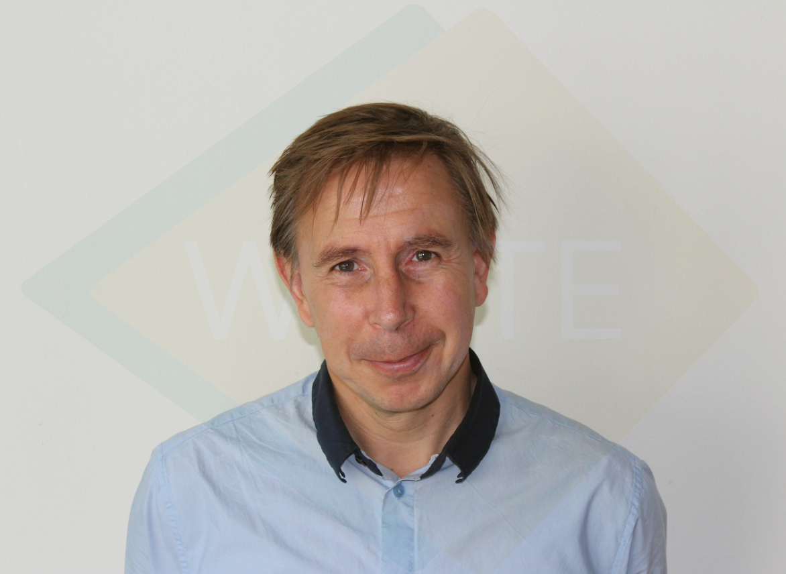

Summary
- Membership in Professional Societies: Chair Programme Board FINISH, Chair Programme Board FINISH INK, Board member Practica, Board Member Social Equity Fund, Board Member Finish Services Management Company Pvt. Ltd., Board Member Waste Kenya Ltd.
Languages
- Dutch,English,French,German,Spanish
Key Qualifications
- Valentin Post has twenty-three years experience in working in developing countries. His field of expertise is financing, enterprise collaboration and capacity-building in solid waste management and sanitation. He has managed the Waste Venture Facility, Guarantee Funds, and initiated several international public private partnerships. Country experience: Austria, Bangladesh, Ghana, India, Indonesia, Mali, Malawi, Nepal, Nigeria, Kenya, Philippines, Sri Lanka, the Netherlands. He has also been active in sectoral and environmental policy analysis, joint venture promotion and wastewater treatment.
Education
- Economics (MA) - Erasmus University Rotterdam, 1985 - 1992
- Specialisation :
Quantitative development economics
- Practice 1 :
Institute of Development Studies, Brighton, UK 1989
- Practice 2:
Institute of Economic Growth, Delhi, India 1990 -1991
- Societal history (MA) -
Erasmus University Rotterdam, 1987 – 1993
- Specialisation :
Agrarian – metropolitarian societies
- Practice 1:
Centre and Documentation Latin America, Amsterdam 1990
- Practice 2:
Calcutta Central Library, India 1991
- Master of Business Administration (MBA) -
University of Twente, 2000- 2001
- Specialisation :
Environment
- Practice 1:
Environmental management system mattress manufacturer
- Practice 2:
Environmental constraints care centre
- Practice 3:
Organisational set-up existing industrial park
Training / workshops
- Technology negotiations and transfer :
UNIDO, 1994
- Disaster management :
UNDP, 1994
- Waste water treatment methods and technologies :
UNIDO, 1997
- Waste water treatment methods and technologies :
UNIDO, 1997
- Municipal solid waste management :
SIDA, 2000
- Cleaner Production : IRG, 2001
-
Masterclass Climate Financing :
Nyenrode, 2015
Employment Records
- Nedworc / WASTE
- 1 April 2016 : Senior sanitation advisor / programme manager India and Kenya; upscaling these programmes in both countries and outside using value cycles and commercial financing
- WASTE
- 2004 - 31 March 2016 :
Finance Director, responsible finances WASTE.
Co-founder and Chair of the Board of the Financial Inclusion Improves Sanitation and Health, € 90 M public private partnership in India focusing on sanitation and inclusive financing (over 600,000 improved sanitation systems build and used)
Co-Founder and Chair of the Board of FINISH in Kenya, € 12 M public private partnership, focusing on sanitation, health and inclusive financing, contextualising Indian experiecnes
Managing Guarantee Funds Kenya, advisor on guarantee funds (Bangladesh, Benin, Ethiopia, Ghana,
Setting up Waste Ventures Facility with local banks (Banco Popular (Costa Rica), Family Finance (Kenya), Indian Bank). Identifying bankable proposals for the local financial instruments. Training of partners on financing aspects in water and sanitation, a.o. Ghana, Kenya, Mali, Nepal. Setting up credit facility with MFI, Serbia. Manager of various projects, post Tsunami reconstruction, business development sanitation, solid waste and debris, regional project sanitation and waste Bangladesh, Nepal and Sri Lanka. Consultancy activities India, Sri Lanka, Ghana, Kenya, Uganda, Philippines, Nepal, Bangladesh, Mali, Costa Rica
- Free lance
- October-December, 2012
UNIDO, Vienna : Teamleader UNIDO team preparing relocation of leather industry from Hazaribagh (Dhaka) to Savar, capital requirements and financing plan, designs, layout, spatial planning etc.
- August 2004 – October 2006 :Part time Director Jane Goodall Netherlands, programme development, fundraising and international activities
- August - September 2004 -
Central Environment Authority (Sri Lanka):Detailed design and financial plan combined biogas & reed bed system pig farm; primary treatment and reed bed system fruit cannery; design municipal low cost waste water treatment system 25,000 p.e. & implementation plan; implementation plan municipal disposal site
- January – July 2004 -
Kilian Water (Netherlands) :Feasibility study for setting up individual wastewater treatment systems in the Netherlands.
- August 1999 - Dec 2000 -
Various : Short term mission to various countries; trouble shooting missions resulting in contracts, division tasks, funds; Part time studies MBA environment. Trouble shooting missions resulting in contracts, division tasks, funds. Environment thesis (MBA, set up and management eco industrial park. Thesis put into practice in Sri Lanka. Programme document regional poverty alleviation Bangladesh, China, India, Indonesia, Nepal, Pakistan, Philippines, Sri Lanka, creation support base (governments, industry); integrated projects for small scale recycling, National Leather Industry Development Programme (Sri Lanka), phased total waste solutions (India, Philippines with Development Bank of the Philippines)
- United Nations Industrial Development Organisation
- October – December 2003 -
Nigeria : Team leader of 10 international and national team members for Master Plan to tackle industrial pollution in Kano (Northern Nigeria). Technical responsible for solid waste part. Creation support base (industry & governments).
- January 2001 – September 2003 -
Sri Lanka : International coordinator US$ 8,000,000 relocation project. In charge wastewater treatment plant US$ 2,000,000. Technical responsible for solid waste solutions, feasibility studies, creation support base, establishing international joint-ventures. Design and supervision execution natural wastewater treatment. Develop ECO-industrial park with Industry Ministry. Coordinate construction factories (private sector with National Development Bank through JICA), roads, water and energy supply (government) and wastewater treatment (UN and private sector). Establish management set up industrial park with long term sustainable cooperation agreements. Environmental advisor industry and government.
- January 1999- July 1999 -
Austria : Consultant solid waste: Coordinate waste management; waste recycling, reuse, disposal, reuse treated wastewater, alternative treatment technologies. prepare detailed programme main contractors with tasks, responsibilities and time schedules wastewater treatment plant Hazaribagh (Bangladesh) and Calcutta (India, 30,000 m3/d), evaluation offers and recommendations for contracts
- July 1995 – Dec 1998 -
India : Consultant solid waste / Associate Expert. Project management – Regional (South and East Asia), Bangladesh, China, India, Indonesia, Nepal, Sri Lanka. In charge of 4 pilot reed beds. Manage UN TA budget US$ 11,000,000 – counterpart budgets well over US$ 44,000,000. Solid waste; pilot landfills, composting sludge (with other organic waste), reuse waste, organising buyers-sellers meetings solid waste, biogas pilot units. Rehabilitation project (tree growing) 1,000,000 litres of treated wastewater, organising finances, polluted land is now public park Establishing foundation to take over activities at end of project, foundation entirely financed by industry
- April 1993 – June 1995 -
Malawi : JPO, support US$ 5,000,000 small enterprise development programme. Project adjustment to reflect US$ 2,000,000 cuts in programme mostly through localising activities. Set up and in charge of small scale projects: application solar energy (thermal) to segregate salt from solution, drip irrigation. Establishment of an industrial revolving fund. Coordination industrial activities within the UN Malawi country programme